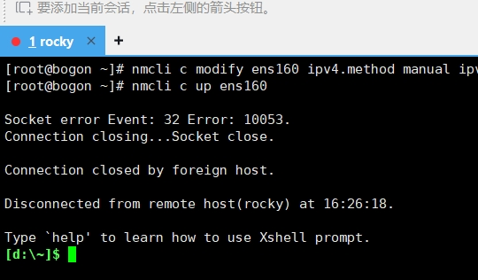
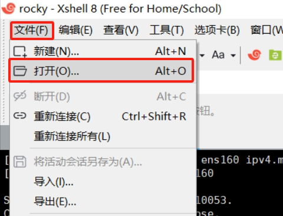
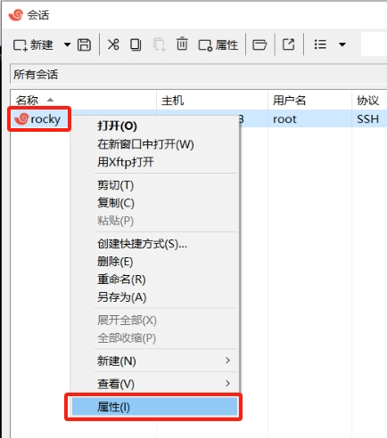
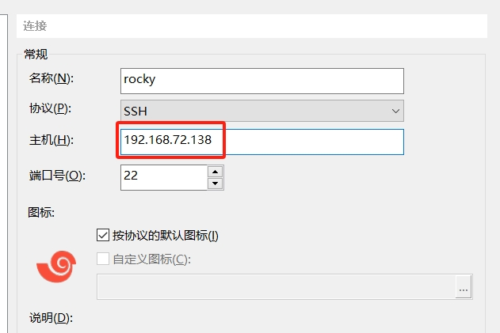
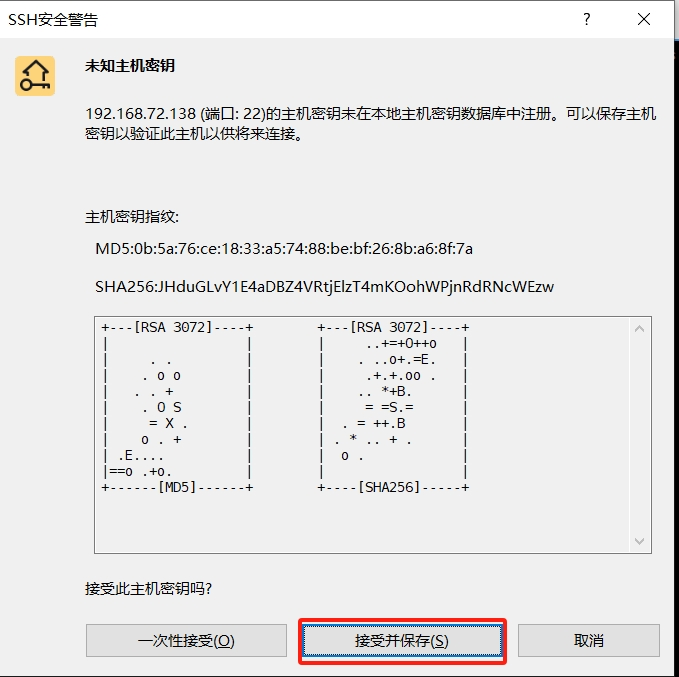
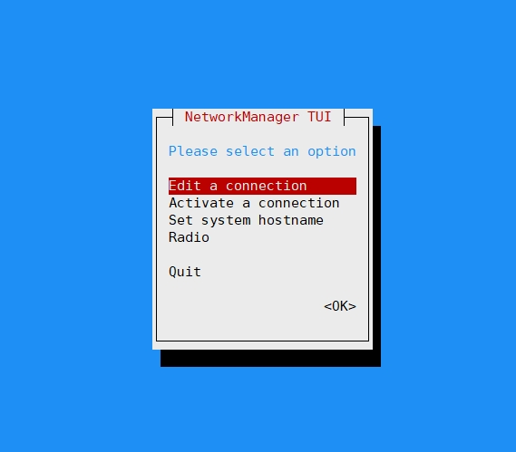

系统网络基础管理#
在安装好Rocky Linux后，便要熟悉使用这个系统了，不同于windows系统的图形界面，Linux绝大多数工作都需要输入命令进行，因此第一步要熟悉如何管理使用这个纯命令行的系统。
先从管理系统网络开始吧！
重要
在学习本章前，请确保你已按照 Rocky Linux安装 中的内容已安装好Rocky Linux系统，并配置好远程访问该系统。
准备工作#
作为新手开始操作Linux系统，一不小心把系统搞坏了怎么办？难道要重装系统吗？
这时候就不得不得到VMware Workstation的快照功能了，我们在开始操作之前，可以先给当前的Linux“拍摄”一个快照，它会记录当前系统的状态。之后把系统玩坏了，可以恢复这个快照，像时光穿梭机一样回到当初拍摄的状态。
点击菜单栏中的拍摄快照按钮
为快照起一个名字，填写描述，然后点击拍摄快照
查看拍摄好的系统快照
恢复到拍摄快照时的状态
在拍摄好快照之后就可以开始下面的内容了
基础网络配置#
当你通过 配置远程访问Rocky Linux 后，安装在虚拟机中的Linux系统已经有了访问网络的能力，这是在安装系统时系统自动配置好的，在这个过程中也生成了一个配置文件，称之为NIC（Network Interface Controller）， 它专门用来控制系统的网络访问行为方式。
如果跟随教程操作失误，导致Xshell无法连接虚拟机中的Rocky Linux，直接直接恢复快照从新来过。
通过nmcli配置网络访问#
列出系统中已经存在的网络连接配置#
nmcli connection show
上图中的ens160便是系统中已存在的默认网络连接配置，而lo是一个特殊的 回路网络接口 配置。
查看NIC的具体配置#
nmcli connection show ens160
此时可以按键盘上的方向键，通过上下键查看，NIC中有非常多的参数，不过大多数参数并不需要我们去理解，这些参数都是系统在自动控制，按键盘上的Q键（意为quit）可退出该界面。我们要着重看一下以下参数：
备注
每个人的电脑情况不同，以下命令的执行结果不一定与本教程相同，这不代表你的结果就是错误的，可能你获取到的IP地址与本教程不同。
nmcli -f ipv4.method,IP4 connection show ens160
上图就是操作系统中关于 IP地址 的关键信息，显示的是本机中 IPv4 地址的信息。
参数名 |
值 |
意义 |
|---|---|---|
ipv4.method |
auto |
|
IP4.ADDRESS |
192.168.72.128/24 |
|
IP4.GATEWAY |
192.168.72.2 |
|
IP4.ROUTE |
dst = 192... |
|
IP4.DNS |
192.168.72.2 |
|
IP4.DOMAIN |
localdomain |
提示
nmcli -f ipv4.method,IP4 connection show ens160 输出了特定内容，这是为何？这是因为nmcli的参数决定的，要想理解参数非常容易。
Linux系统中的所有命令都有帮助信息，比如在命令行中输入 nmcli --help ：
然后再输入 nmcli c help 了解connection的用法（没错，connection可以简写为c）：
这样我们就了解到 nmcli -f ipv4.method,IP4 c show ens160 的作用了：
-f：指定输出的字段，我们指定了ipv4.method和IP4
c：代表connection，我们想查看网络连接的内容
show：展示需要查看的内容
ens160：是安装好系统后默认的网络连接NIC名称
Linux中有大量命令，不需要死记硬背，不会使用直接 --help 一般就可以得到使用指南，探索未知的事物也不失为一种乐趣。
为ens160配置静态地址#
刚刚查到，ens160的ipv4.method是auto属性，它是DHCP的动态IP地址，某些情况下会导致主机的地址来回变化。那如果我们希望主机一直使用一个固定IP怎么办？这时就可以给它设置一个 静态IP地址 ：
警告
本小节操作稍有不慎，极易导致xshell失去与虚拟机中的Rocky Linux的连接，所以在开始之前做好快照。如果xshell没有任何反应，就说明已经与虚拟机中的系统失去连接，哪里的步骤操作有问题，可恢复快照后重新开始。
恢复快照会将之前的所有操作抹去，恢复成拍摄快照时的状态。
nmcli c modify ens160 ipv4.method manual ipv4.address 192.168.72.138/24 ipv4.gateway 192.168.72.2 ipv4.dns 192.168.72.2 ipv4.dns-search 192.168.72.2
参数说明：
执行
nmcli c help可知modify可用来修改网络连接配置，我们修改的目标为ens160ipv4.method manual 将会改为手动，也就是静态地址（Static IP），此时主机将不会再自动获取IP地址
ipv4.address 192.168.72.138/24 为虚拟机指定的地址，通过
nmcli -f ipv4.method,ip4 c show ens160查到的IP.ADDRESS加10，以你的实际情况为准ipv4.gateway 192.168.72.2 为虚拟机指定的网关地址，通过
nmcli -f ipv4.method,ip4 c show ens160查到的IP.GATEWAY，网关在一个网络中一般只有一个，这个我们保持不变ipv4.dns 192.168.72.2 为虚拟机指定DNS地址，通过
nmcli -f ipv4.method,ip4 c show ens160查到的IP.DNSipv4.dns-search 192.168.72.2 同DNS即可
执行完上面的命令后，网络配置并没有生效，还需要执行以下的命令激活我们配好的配置：
nmcli c up ens160
执行完此命令后，xshell会立即失去响应，没多久会显示连接断开
这是正常的，因为我们改变了虚拟机的IP地址，需要更新一下Xshell的配置，便可重新连接：
点击文件-打开
鼠标右键先前配置好的连接，然后选择属性
在主机处更新刚刚配置好的地址：192.168.72.138
然后点击确定，再点击连接，因为我们用新IP连接虚拟机，需要重新接受并保存主机密钥
这样我们就通过新的IP成功登录了虚拟机内的系统。
确认配置好的网络配置#
显示最新的IP地址： ip address show ens160
显示网关地址： ip route show default ，显示DNS地址： cat /etc/resolv.conf
确认DNS功能正常 ping baidu.com ，可按Ctrl+C键取消：
提示
同样此处可以使用 ip --help 查看该命令的使用方法，以便理解上述命令参数的意义，cat，ping兼可如此
ip为网络管理的另一个命令，cat是查看文件内容的命令，ping为测试网络连通性的命令
如上，如果你的配置没有问题，那此次修改静态地址的行动便成功了，你已有了初步管理Linux系统网络的能力。
通过nmtui配置网络#
通过nmcli配置网络真是太痛苦了，有没有简便一点的方式？当然有，它就是nmtui！直接在命令行中输入nmtui，它会出现一个 TUI界面 （Text-based User Interface）
重要
在TUI中注意：
方向键可上下选择内容
回车键可进入相关菜单或确认选择
空格键可选中或取消选择选择框
刚刚我们使用nmcli将系统配置为静态IP地址，现在来使用nmtui将系统改回DHCP获取IP地址：
按键盘方向键上下键，选中Edit a connection，然后按下回车键
光标此时处于ens160上，直接按下回车键
选中IPv4 CONFIGURATION的Manual，回车选择Automatic，然后删除address，DNS，search domains配置：
移动下面的OK，回车保存配置
选中Back，返回
选中Quit，按下回车键后，将会退出nmtui
此时配置修改完成，但没有生效，还需要执行 nmcli c up ens160 来使配置生效。因为改为DHCP，此时系统将会重新获取IP地址，xshell将再次失去连接，需要去VMware中查看最新的IP地址是什么：
将查到的IP地址，重新在xshell中配置好，便可恢复xshell的远程访问。
学完以上内容，你已掌握了Linux基本的网络配置方法。